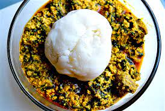

Egusi soup

Egusi is a West African name for the seeds of plants like squash, melons, and gourds that, when dried and ground become a staple ingredient in many West African dishes.
Ingreidents
- 1 cup blended onions (about 3- 5 and fresh chilies, to taste)
- 4 cups egusi (melon seeds, ground or milled)
- 1/2 - 1 cup palm oil
- 2 teaspoons fresh Une (Iru, locust beans)
- Salt (to taste)
- Ground crayfish (to taste)
- 7-8 cups stock
- Cooked Meat & fish (quantity and variety to personal preference)
- 2 cups cut pumpkin leaves
- 1 cup waterleaf (cut)
- 3 tablespoons bitter leaf (washed)
Recipe
- In a large pot, heat the palm oil on medium for a minute and then add the Une.
- Slowly add the stock and set on low heat to simmer.
- Scoop teaspoon size balls of the egusi paste mixture into the stock. Be sure to keep ball shape.
- Leave to simmer for 20 - 30 minutes so the balls cook through.
- Add the meat and fish and other bits which you'd like to use.
- Add cut-up pumpkin leaves.
- Add the waterleaf.
- Stir and put a lid on the pot and allow cook for 7-10 minutes, till the leaves wilt.
- Add the bitter leaf. Leave the lid off while the cooking finishes for another 5-10 minutes.
- Stir, check seasoning and adjust accordingly.
Now you can sit back and enjoy your delicious Nigerian Egusi Soup!